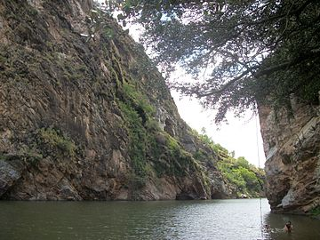
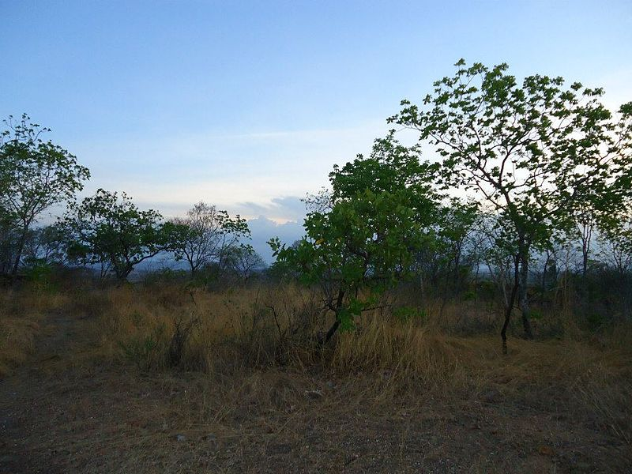
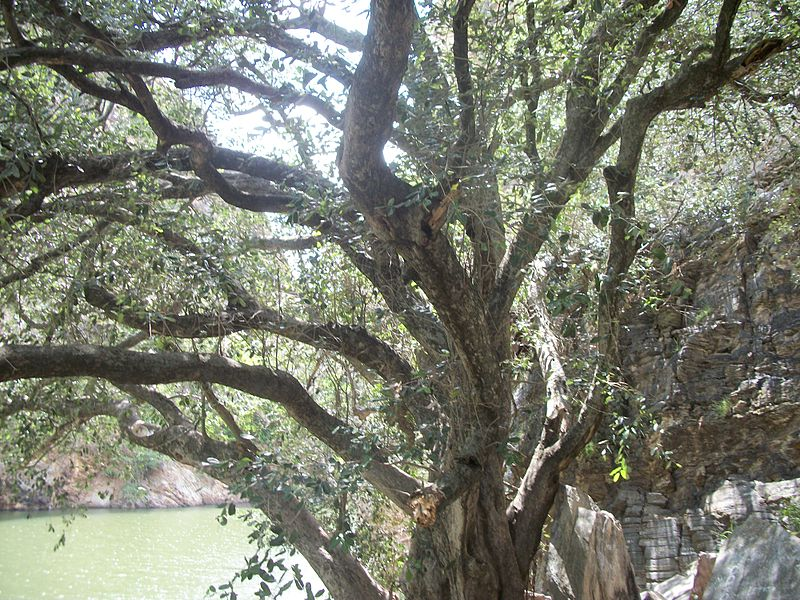

Informações técnicas sobre relevo, população, IDH etc.
| INFORMAÇÕES | |
|---|---|
| Municípios limítrofes | Cedro, Ipaumirim, Icó, Umari, Baixio, Aurora, Caririaçu, Granjeiro e Várzea Alegre |
| Fundação | 20 de agosto de 1816 (204 anos) |
| Área total | 947,957 km² |
| Clima | Semiárido |
| IDH | 0,636 — médio |
| PIB | R$ 95 925,503 mil |
| INFORMAÇÕES TERRITORIAIS | |
|---|---|
| Número de habitantes | 31 508 habitantes |
| Superfície de Lavras da Mangabeira |
94 796 hectares
947,96 km² (366,01 sq mi) |
| Densidade populacional | 33,2 ha./km² |
| Altitude de Lavras da Mangabeira | 279 metros de altitude |
| Coordenadas geográficas decimais |
Latitude:
-6.75214
Longitude: -38.9732 |
| Coordenadas geográficas sexagesimais | Latitude: 6° 45' 8'' Sul , Longitude: 38° 58' 24'' Oeste |
| INFORMAÇÕES DO MUNICÍPIO | |
|---|---|
| Endereço da Prefeitura Municipal de Lavras da Mangabeira |
Lavras da Mangabeira
Prefeitura de Lavras da Mangabeira
Rua Monsenhor Meceno, 78 LAVRAS DA MANGABEIRA - CE, 63300-000 Brasil Work +55 88 3536-1600 Fax +55 88 3536-1256 |
| Telefone da prefeitura |
(88) 3536-1600
Internacional: +55 88 3536-1600 |
| Fax |
(88) 3536-1256
Internacional: +55 88 3536-1256 |
| Endereço eletrônico da prefeitura |
Não disponível
|
| Site oficial do município | lavrasdamangabeira.ce.gov.br |
| INFORMAÇÕES DO ADMINISTRATIVAS | ||
|---|---|---|
| Prefeito de Lavras da Mangabeira | RONALDO PEDROSA LIMA | |
| Partido politico | PSD | |
| INFORMAÇÕES DE TRANSPORTE | |
|---|---|
| Transporte urbano disponível | - |
| Aeroporto |
Aeroporto Regional do Cariri
Aeroporto Dix-Sept Rosado
248 km
Aeroporto de Picos
284.1 km
|
| INFORMAÇÕES DE DISTÂNCIA A OUTRAS CIDADES | ||
|---|---|---|
| São Paulo : 2042 km | Rio de Janeiro : 1854 km | Brasília : 1401 km |
| Salvador : 694 km | Belo Horizonte : 1551 km | Manaus : 2369 km |
| Curitiba : 2350 km | Fortaleza : 341 km mais perto | Goiânia : 1573 km |
| Belém : 1211 km | Porto Alegre : 2891 km | Guarulhos : 2020 km |
| Campinas : 1996 km | São Luís : 756 km | São Gonçalo : 2.188 km |
| Distância calculada em linha reta! | ||
Conheça mais sobre a história de Lavras da Mangabeira.
Lavras da Mangabeira é um município brasileiro do estado do Ceará. Localiza-se na microrregião de Lavras da Mangabeira, na Mesorregião Centro-Sul Cearense. A cidade também faz parte da Região Metropolitana do Cariri. O município tem 31.508 habitantes, conforme estimativa do IBGE de 2019 e sua área territorial é de 947,957 km². A cidade é conhecida por seu ponto turístico (o Boqueirão de Lavras) e por ser a terra de Dona Fideralina Augusto, figura de destaque do coronelismo nordestino. Os seus maiores representantes na área da cultura são os músicos Gilberto Milfont, Francisco Araujo e Nonato Luiz, as artistas plásticas Sinhá d'Amora e Rosa Firmo Beserra, e os escritores Filgueiras Lima, João Clímaco Bezerra, Joaryvar Maedo, Dimas Macedo,Linhares Filho E Cristina Maria Couto.
As terras localizadas às margens do Jaguaribe-Mirim ou rio Salgado, eram habitadas pelos índios de diversas etnias tais como os Kariri, os Guariús.Com a definitiva ocupação do território de Ceará no século XVII, na região dos Cariris, chegaram diversas entradas. Os integrantes das entradas, militares e religiosos, mantiveram os primeiros contatos com os nativos, estudaram as tribos, catequizavam os indígenas e os agruparam em aldeamentos ou missões.
Os resultados destes contatos e descobrimentos desencadearam notícias que na região das Minas de São José dos Cariris Novos (atual município de Missão Velha), tinha ouro em abundância e em seguida desencadeou-se uma verdadeira corrida para os sertões brasileiros, onde famílias oriundas de Portugal, sonhando com as riquezas de terras inexploradas e com a esperança de encontrar o minério, que as levariam a aumentar o seu patrimônio material, além de aumentar o seu prestigio pessoal com a corte portuguesa.
A busca do metal precioso, nas ribanceiras do Rio Salgado, trouxe para a região do Sertão do Cariri, a colonização e com consequência a doação de sesmarias, o que permitiu o surgimento de lugarejos e vilas.A febre do ouro durou até a segunda metade do século XVII. Várias prospecções se realizaram, porém em vão, uma vez que a extração de referido minério se tornou onerosa às Cortes de Lisboa, que determinaram a sua suspensão, em 1758. Essas aventuras auríferas que se fizeram, entre outros, nos sítios Fortuna, Oiteiro, Barreiros e Morros Dourados e, especialmente, no lugar denominado Boqueirão de Lavras; a criação da capela de São Vicente Férrer, foram as bases que deram início ao centro urbano que hoje chama-se Lavras da Mangabeira.
Com a expansão da Estrada de Ferro de Baturité até a cidade do Crato, em 1917, no município de Lavras da Mangabeira, foram inauguradas três estações de trem (Arrojado, antigo Paino); na cidade de Lavras; e em Iborepi (antigo Riacho Fundo). Esta malha ferroviária representou o impulso para a economia local, principalmente porque a partir da estação de Paino ou Arrojado, o Ceará ficou ligado à Paraíba via o Ramal da Paraíba. Famílias que vieram a Lavras da Mangabeira em busca do ouro, estabeleceram-se de modo a constituir essa cidade e consolidar sua própria história. Buscando conservar seu sangue, herança genética e seus sobrenomes, mantiveram uniões entre certas famílias e podem ser observados como verdadeiros clãs, que ainda hoje conservam esses padrões e moram ou mantêm fortíssimas ligações com a cidade e entre sua família.
Saiba mais sobre os melhores lugares e o que fazer em Lavras da Mangabeira.
O turismo também movimenta a cidade devido às suas belezas naturais, com destaque especial ao Boqueirão e a sua gruta, que além de ser um local de imensa beleza, é um objeto de estudo que recebe estudiosos e diversas escolas do interior do estado, para conhecer sua impressionante formação geográfica e histórica, sendo um alvo de lendas que compõem a história da cidade.
Boqueirão do Rio Salgado, também chamado Boqueirão de Lavras ou simplesmente Boqueirão é uma pequena chapada dividida por um boqueirão em meio à depressão sertaneja localizada no município de Lavras da Mangabeira, no estado do Ceará. Possui uma gruta homônima em sua parte alta, que é cercada de curiosas lendas.
O Boqueirão se localiza numa área de ecótono entre dois biomas: caatinga e cerrado. Logo, tanto nele quanto em áreas adjacentes existem plantas comuns aos dois ecossistemas. Entre as mais encontradas estão: mangaba, juazeiro, pereiro, angico, pau-branco, xiquexique, imbê, gravatá, caroá (os 4 últimos no alto), pau-d'arco roxo, jucá, cedro-cheiroso, trapiá, cajueiro-bravo-do-campo, cajueiro, carnaúba, pinhão-bravo, braúna, peroba, mulungu, gonçalo-alves, aroeira, jacarandá-mimoso, cumaru-nordestino, ipê-verde, caroba-branca, guaçatonga, pau-santo, canafístula, pacote e oiticica (inclusive, no balneário, existe uma árvore desta espécie que é centenária, entre os rochedos).
A Gruta do Boqueirão, ou Caverna do Boqueirão, localiza-se no município de Lavras da Mangabeira, no estado do Ceará, a cinco quilômetros ao norte da sede do município.O gruta do Boqueirão, como o próprio nome indica, é uma garganta aberta, na serra homônima, pelo Jaguaribe-Mirim ou que, a cortou nos tempos das formações geográficas, com o volume das águas. Formada por duas partes descomunais, aberta, na própria rocha, a referida garganta, que dá vazão, através do rio Salgado, a todas as águas fluentes do sul do estado do Ceará, tem uma altura de noventa e três metros e uma largura de quarenta, com poço permanente à época da estação seca. Originária da desagregação da rocha, e com avultado comprimento, se bem que ignorado, demora essa gruta a cerca de cem palmos acima do nível do poço, apresentando a configuração de uma cúpula achatada e servindo de morada a morcegos.
No século XIX, como parte do projeto de combate a seca no Ceará, o governo imperial de D. Pedro II projetou a construção de um enorme reservatório no local. Os estudos foram confiados ao engenheiro inglês Jules Jean Revy, que chegou à conclusão da inviabilidade do empreendimento devido a diversos fatores, constantes do seu relatório, inclusive a fragilidade do rochedo nos encontros do muro e a dificuldade de se fazer um escoamento sobre a rocha sólida.
A respeito do Boqueirão e suas lendas, é muito comum se ouvir histórias a respeito de fenômenos estranhos que ocorriam no local, tanto no fundo do poço, como no interior da gruta, as quais encontram guarida na crendice popular. Salas ricamente atapetadas, mesas e altares com lindíssimas toalhas, baixelas de metal precioso e um carneiro de ouro viam-se, ali, em determinadas circunstâncias, de envolta com os encantamentos próprios das fantasias. Dizia-se, por exemplo, que no fundo do poço, que é extenso e profundo, quando a água serenava, era visto um carneiro de ouro em pé sobre uma pedra, prenunciando ali haver um intenso cabedal subterrâneo. E nos escândalos da gruta que só se pode chegar lá de balsas pelo poço e subir as escadas até lá, era vista uma mesa atoalhada, com baixelas de ouro e prata. E se alguém conseguisse de fora, alcançar com longas varas a tal mesa e derrubar toda aquela riqueza, atemorizava-se ao ver que em poucos minutos estava novamente composta.
Veja como chegar nos melhores pontos de Lavras da Mangabeira.